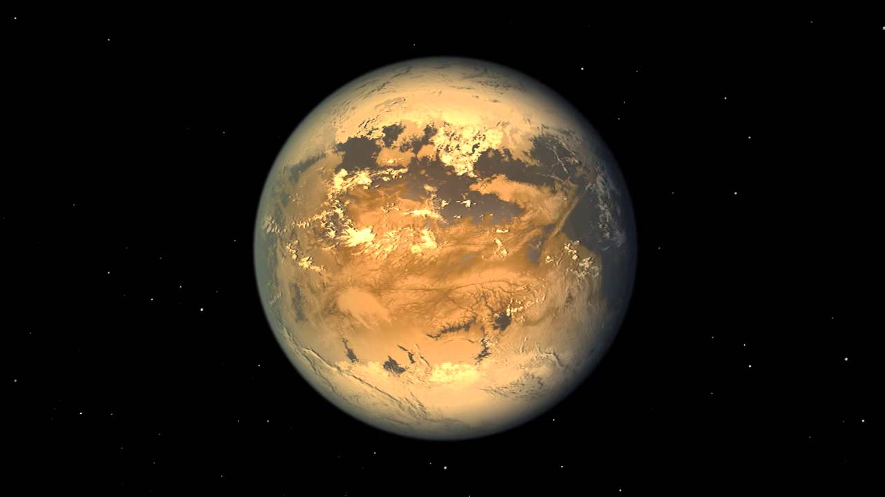
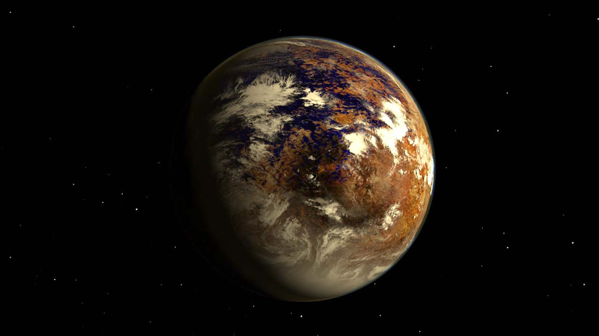
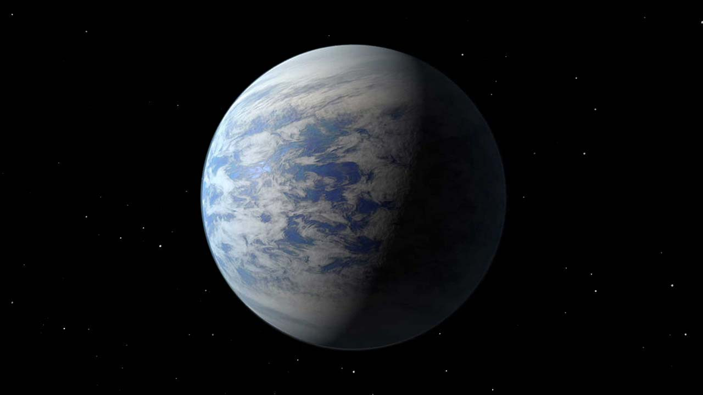
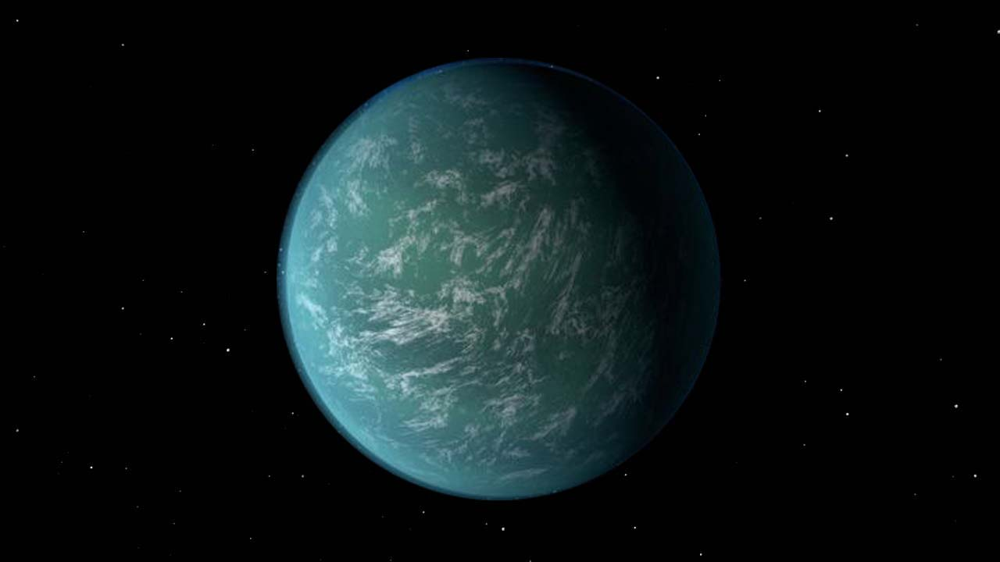
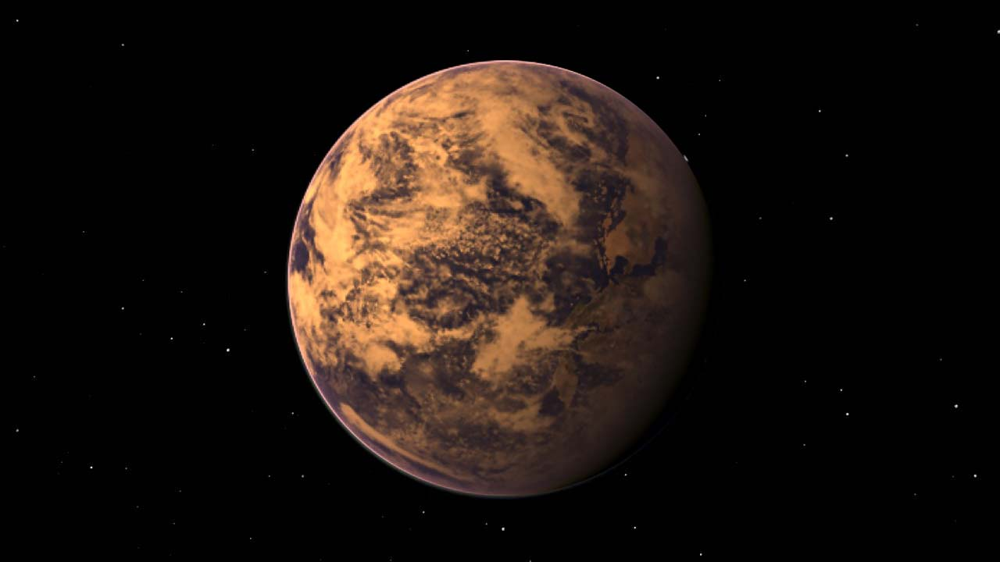
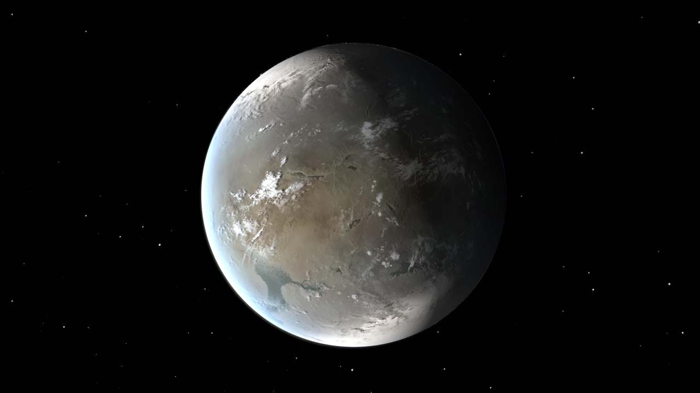
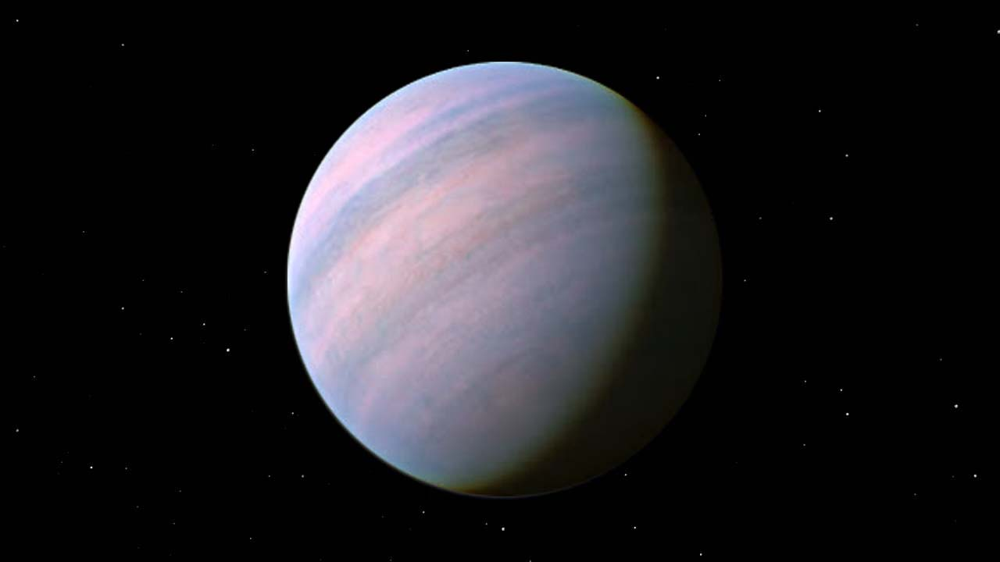
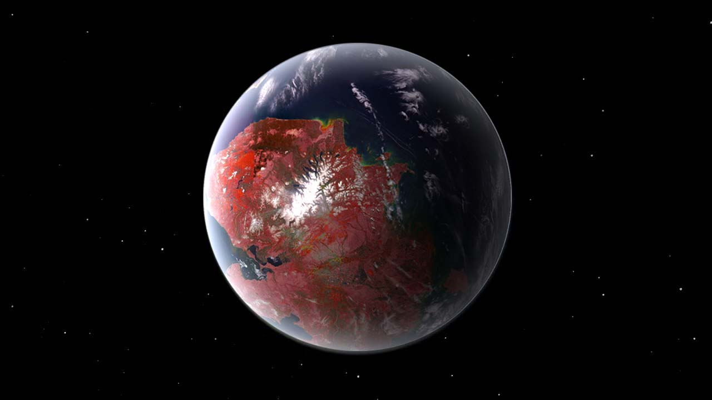
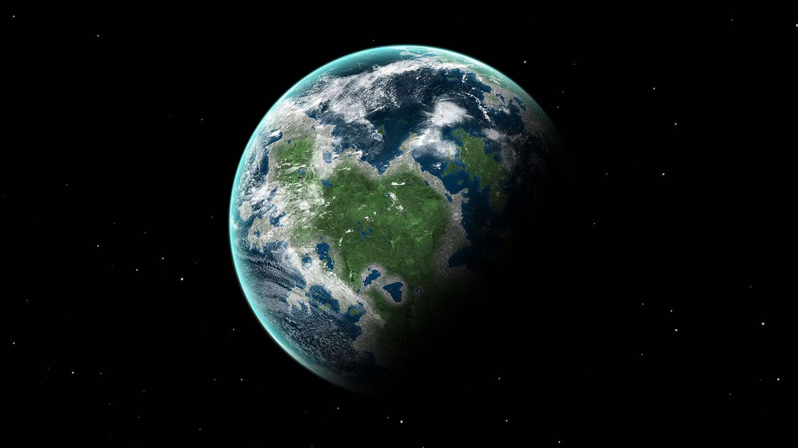

Hover over a card below to reveal data about the planet!

Kepler-186f
Kepler-186f
- Distance to Earth: 557.7 light years
- Radius: 4,631.7 mi
- Orbital period: 130 days
- Discovered: April 17, 2014
- Discoverer: Elisa Quintana
- Orbital eccentricity: 0.04

Proxima Centauri b
Proxima Centauri b
- Distance to Earth: 4.24 light years
- Orbital period: 11 days
- Discovered: August 24, 2016
- Discoverer: Mikko Tuomi
- Orbits: Proxima Centauri

Kepler-452b
Kepler-452b
- Distance to Earth: 1,402 light years
- Radius: 5,938.1 mi
- Orbital period: 385 days
- Discovered: July 23, 2015
- Gravity: 18.63 m/s²

Kepler-22b
Kepler-22b
- Distance to Earth: 587.1 light years
- Radius: 9,501 mi
- Orbital period: 290 days
- Discovered: December 5, 2011
- Temperature: 295 K (22 °C; 71 °F)

Gliese 667 Cc
Gliese 667 Cc
- Distance to Earth: 22.18 light years
- Radius: 6,096.5 mi
- Orbital period: 28 days
- Discovered: November 21, 2011
- Orbits: Gliese 667

Kepler-62f
Kepler-62f
- Distance to Earth: 1,207 light years
- Radius: 5,581.9 mi
- Orbital period: 267 days
- Star: Kepler-62 (KOI-701)
- Discoverer: Eric Agol

Gliese 581d
Gliese 581d
- Distance to Earth: 20.3 light years
- Radius: 8,709.3 mi
- Orbital period: 67 days
- Discoverer: Stéphane Udry

Kepler-442b
Kepler-442b
- Distance to Earth: 1,115 light years
- Radius: 5,304.7 mi
- Orbital period: 112 days
- Discovered: January 6, 2015
- Star: Kepler-442 (KOI-4742)

HD 85512 b
HD 85512 b
- Distance to Earth: 36.2 light years
- Radius: 5,146.4 mi
- Eccentricity: (0.11 ± 0.1)
- Discovered: August 17, 2011
- Discoverer: Stéphane Udry

Gliese 581g
Gliese 581g
- Distance to Earth: 20.42 light years
- Radius: 32 days
- Mean anomaly: 271 ± 48
- Orbits: Gliese 581
- Discoverer: R. Paul Butler, Steven S. Vogt